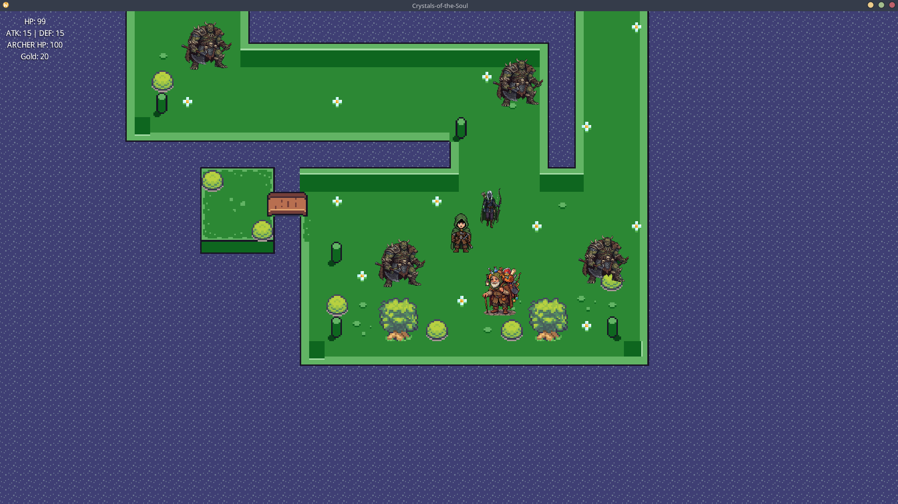
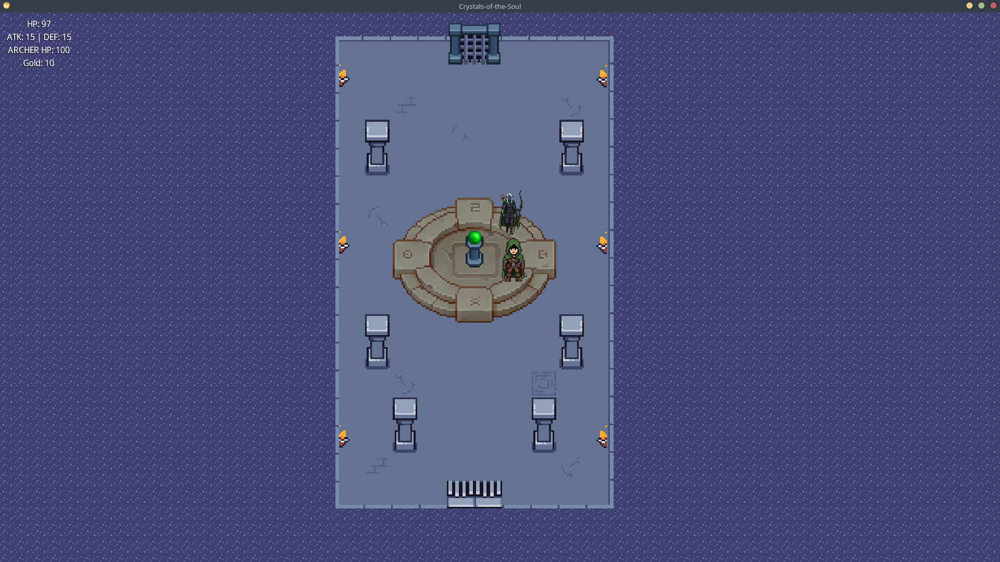
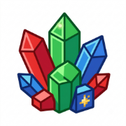

Crystals of the Soul
Gioco di ruolo dungeon crawler a sfondo morale

Il Progetto
Crystals of the Soul è un gioco di ruolo a turni con visuale dall'alto in cui il giocatore scende attraverso un dungeon di sei piani (un piano tutorial + 5 piani di gioco effettivo).
Ogni incontro offre una scelta morale: uccidere il nemico o risparmiarlo. Il gioco tiene un conteggio morale progressivo, e questo conteggio determina silenziosamente lo svolgimento della storia.
Tecnologie Utilizzate
- Java
- LibGDX
- Gradle
- Tiled
Caratteristiche Principali
- Dungeon di 6 piani (1 livello tutorial + 5 livelli di gioco)
- Scelte morali negli incontri (uccidere o risparmiare i nemici)
- Sviluppo silenzioso della trama in base al conteggio morale
- Sistema di combattimento strategico a turni
- Visuale dall'alto (Top-Down) con esplorazione 2D
Screenshot

